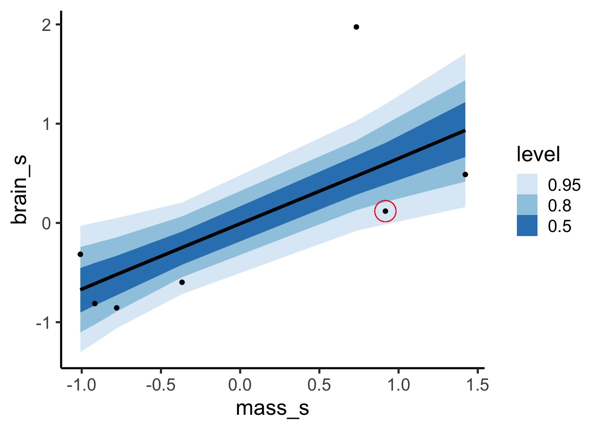
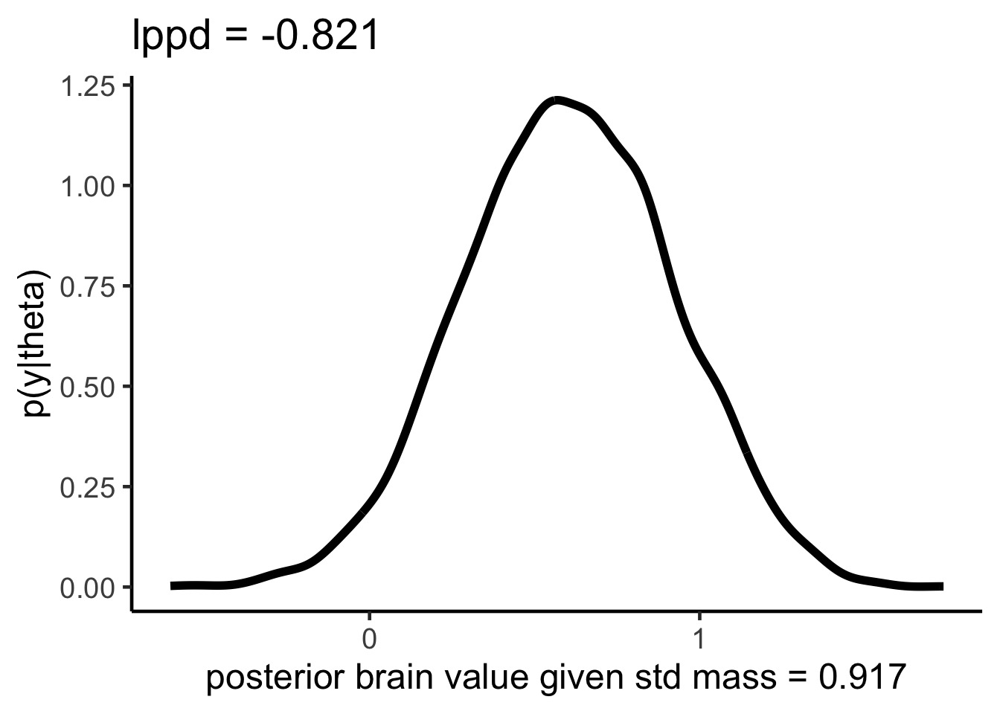

Information Theory and a Multimodel World
How complex a model do you need to be useful?

Some models are simple but good enough

More Complex Models are Not Always Better or Right

Our Old Friend \(R^2\), but Bayesian
\[R^2 = \frac{Var_{model}}{Var_{data}}\]
But, with some priors, this can be negative
\[R^2_{bayes} = \frac{Var_{model}}{Var_{model} + Var_{residual}}\]
Is this useful?
A Bayesian R2 Function
Consider this data…
Underfitting
We have explained nothing!
Overfitting
We have perfectly explained this sample
What is the right fit? How do weGet there?
How do we navigate Scylla and Charybdis?
Information theory
Regularization
- Force parameters to demonstrate they have strong support
- Penalize parameters with weak support
Optimization for Prediction
- Cross-Validation
- Information Theory
- Drawing from comparison of information loss
- Cross-Validation
Information Theory and Entropy
Entropy: Over the distribution of brainvolcc, what is the average log probability of observing values
\[H = - E[log(p_i)] = -\sum p_i log(p_i)\]
sum over the curve
notice higher entropy the more a wiggly curve as it repeats the same values
a straight line will have lower entropy from a uniform distribution
Difference between the truth and a model
Kullback-Leibler Divergence
Divergence: The additional uncertainty induced by using probabilities from one distribution to describe another distribution.
\[D_{KL} = \sum p_i (log(p_i) − log(q_i)) \\ = \sum p_i log\frac{p_i}{q_i}\] where \(q_i\) is the probability of a value from the model and \(p_i\) from the truth. This is the difference in information caused by using the model to approximate the truth.
But - we want to compare models
Difference in information loss between Model 1 (q) and Model 2 (r)
\[ = \sum p_i (log(p_i) − log(q_i) - \sum p_i (log(p_i) − log(r_i) \\\] \[= \sum p_i log(p_i) − p_i log(p_i) - p_i log(q_i) + p_i log(r_i)\] \[= \sum p_i log(r_i) - p_i log(q_i)\] \[=\sum p_i(log(r_i) - log(q_i))\] \[= E[log (r_i)] - E[log(q_i)]\]
So, What is Our Score of Interest Then?
It’s all about \(E[log(q_i)]\)!
\[S(q) = \sum log(q_i)\]
This is the unscaled average of our model score.
It is also the log pointwise predictive density.
Provides an estimate of how well our model’s predictive accuracy.
Pointwise, and uses entire posterior for each observation.
lppd for one point, visually


lppd and Deviance
\[ Deviance \approx -2 *llpd\]
Hello, old friend.
Increasing model complexity will always improve lppd.
Out of sample llpd will get worse with model complexity.
In and Out of Sample Deviance
In and Out of Sample Deviance
Prediction: 806.8141456, Observe: 515
Deviance: 8.5265838^{4}
In and Out of Sample Deviance
Our Goal for Judging Models
Can we minimize the out of sample deviance
So, fit a model, and evaluate how different the deviance is for a training versus test data set is
What can we use to minimize the difference?
How do we navigate Scylla and Charybdis?
Information theory
Regularization
- Force parameters to demonstrate they have strong support
- Penalize parameters with weak support
Optimization for Prediction
- Cross-Validation
- Information Theory
- Drawing from comparison of information loss
- Cross-Validation
Regularlization
List of 97
$ line :List of 6
..$ colour : chr "black"
..$ linewidth : num 0.773
..$ linetype : num 1
..$ lineend : chr "butt"
..$ arrow : logi FALSE
..$ inherit.blank: logi TRUE
..- attr(*, "class")= chr [1:2] "element_line" "element"
$ rect :List of 5
..$ fill : chr "white"
..$ colour : chr "black"
..$ linewidth : num 0.773
..$ linetype : num 1
..$ inherit.blank: logi TRUE
..- attr(*, "class")= chr [1:2] "element_rect" "element"
$ text :List of 11
..$ family : chr ""
..$ face : chr "plain"
..$ colour : chr "black"
..$ size : num 17
..$ hjust : num 0.5
..$ vjust : num 0.5
..$ angle : num 0
..$ lineheight : num 0.9
..$ margin : 'margin' num [1:4] 0points 0points 0points 0points
.. ..- attr(*, "unit")= int 8
..$ debug : logi FALSE
..$ inherit.blank: logi TRUE
..- attr(*, "class")= chr [1:2] "element_text" "element"
$ title : NULL
$ aspect.ratio : NULL
$ axis.title : NULL
$ axis.title.x :List of 11
..$ family : NULL
..$ face : NULL
..$ colour : NULL
..$ size : NULL
..$ hjust : NULL
..$ vjust : num 1
..$ angle : NULL
..$ lineheight : NULL
..$ margin : 'margin' num [1:4] 4.25points 0points 0points 0points
.. ..- attr(*, "unit")= int 8
..$ debug : NULL
..$ inherit.blank: logi TRUE
..- attr(*, "class")= chr [1:2] "element_text" "element"
$ axis.title.x.top :List of 11
..$ family : NULL
..$ face : NULL
..$ colour : NULL
..$ size : NULL
..$ hjust : NULL
..$ vjust : num 0
..$ angle : NULL
..$ lineheight : NULL
..$ margin : 'margin' num [1:4] 0points 0points 4.25points 0points
.. ..- attr(*, "unit")= int 8
..$ debug : NULL
..$ inherit.blank: logi TRUE
..- attr(*, "class")= chr [1:2] "element_text" "element"
$ axis.title.x.bottom : NULL
$ axis.title.y :List of 11
..$ family : NULL
..$ face : NULL
..$ colour : NULL
..$ size : NULL
..$ hjust : NULL
..$ vjust : num 1
..$ angle : num 90
..$ lineheight : NULL
..$ margin : 'margin' num [1:4] 0points 4.25points 0points 0points
.. ..- attr(*, "unit")= int 8
..$ debug : NULL
..$ inherit.blank: logi TRUE
..- attr(*, "class")= chr [1:2] "element_text" "element"
$ axis.title.y.left : NULL
$ axis.title.y.right :List of 11
..$ family : NULL
..$ face : NULL
..$ colour : NULL
..$ size : NULL
..$ hjust : NULL
..$ vjust : num 0
..$ angle : num -90
..$ lineheight : NULL
..$ margin : 'margin' num [1:4] 0points 0points 0points 4.25points
.. ..- attr(*, "unit")= int 8
..$ debug : NULL
..$ inherit.blank: logi TRUE
..- attr(*, "class")= chr [1:2] "element_text" "element"
$ axis.text :List of 11
..$ family : NULL
..$ face : NULL
..$ colour : chr "grey30"
..$ size : 'rel' num 0.8
..$ hjust : NULL
..$ vjust : NULL
..$ angle : NULL
..$ lineheight : NULL
..$ margin : NULL
..$ debug : NULL
..$ inherit.blank: logi TRUE
..- attr(*, "class")= chr [1:2] "element_text" "element"
$ axis.text.x :List of 11
..$ family : NULL
..$ face : NULL
..$ colour : NULL
..$ size : NULL
..$ hjust : NULL
..$ vjust : num 1
..$ angle : NULL
..$ lineheight : NULL
..$ margin : 'margin' num [1:4] 3.4points 0points 0points 0points
.. ..- attr(*, "unit")= int 8
..$ debug : NULL
..$ inherit.blank: logi TRUE
..- attr(*, "class")= chr [1:2] "element_text" "element"
$ axis.text.x.top :List of 11
..$ family : NULL
..$ face : NULL
..$ colour : NULL
..$ size : NULL
..$ hjust : NULL
..$ vjust : num 0
..$ angle : NULL
..$ lineheight : NULL
..$ margin : 'margin' num [1:4] 0points 0points 3.4points 0points
.. ..- attr(*, "unit")= int 8
..$ debug : NULL
..$ inherit.blank: logi TRUE
..- attr(*, "class")= chr [1:2] "element_text" "element"
$ axis.text.x.bottom : NULL
$ axis.text.y :List of 11
..$ family : NULL
..$ face : NULL
..$ colour : NULL
..$ size : NULL
..$ hjust : num 1
..$ vjust : NULL
..$ angle : NULL
..$ lineheight : NULL
..$ margin : 'margin' num [1:4] 0points 3.4points 0points 0points
.. ..- attr(*, "unit")= int 8
..$ debug : NULL
..$ inherit.blank: logi TRUE
..- attr(*, "class")= chr [1:2] "element_text" "element"
$ axis.text.y.left : NULL
$ axis.text.y.right :List of 11
..$ family : NULL
..$ face : NULL
..$ colour : NULL
..$ size : NULL
..$ hjust : num 0
..$ vjust : NULL
..$ angle : NULL
..$ lineheight : NULL
..$ margin : 'margin' num [1:4] 0points 0points 0points 3.4points
.. ..- attr(*, "unit")= int 8
..$ debug : NULL
..$ inherit.blank: logi TRUE
..- attr(*, "class")= chr [1:2] "element_text" "element"
$ axis.ticks :List of 6
..$ colour : chr "grey20"
..$ linewidth : NULL
..$ linetype : NULL
..$ lineend : NULL
..$ arrow : logi FALSE
..$ inherit.blank: logi TRUE
..- attr(*, "class")= chr [1:2] "element_line" "element"
$ axis.ticks.x : NULL
$ axis.ticks.x.top : NULL
$ axis.ticks.x.bottom : NULL
$ axis.ticks.y : NULL
$ axis.ticks.y.left : NULL
$ axis.ticks.y.right : NULL
$ axis.ticks.length : 'simpleUnit' num 4.25points
..- attr(*, "unit")= int 8
$ axis.ticks.length.x : NULL
$ axis.ticks.length.x.top : NULL
$ axis.ticks.length.x.bottom: NULL
$ axis.ticks.length.y : NULL
$ axis.ticks.length.y.left : NULL
$ axis.ticks.length.y.right : NULL
$ axis.line : list()
..- attr(*, "class")= chr [1:2] "element_blank" "element"
$ axis.line.x : NULL
$ axis.line.x.top : NULL
$ axis.line.x.bottom : NULL
$ axis.line.y : NULL
$ axis.line.y.left : NULL
$ axis.line.y.right : NULL
$ legend.background :List of 5
..$ fill : NULL
..$ colour : logi NA
..$ linewidth : NULL
..$ linetype : NULL
..$ inherit.blank: logi TRUE
..- attr(*, "class")= chr [1:2] "element_rect" "element"
$ legend.margin : 'margin' num [1:4] 8.5points 8.5points 8.5points 8.5points
..- attr(*, "unit")= int 8
$ legend.spacing : 'simpleUnit' num 17points
..- attr(*, "unit")= int 8
$ legend.spacing.x : NULL
$ legend.spacing.y : NULL
$ legend.key :List of 5
..$ fill : chr "white"
..$ colour : logi NA
..$ linewidth : NULL
..$ linetype : NULL
..$ inherit.blank: logi TRUE
..- attr(*, "class")= chr [1:2] "element_rect" "element"
$ legend.key.size : 'simpleUnit' num 1.2lines
..- attr(*, "unit")= int 3
$ legend.key.height : NULL
$ legend.key.width : NULL
$ legend.text :List of 11
..$ family : NULL
..$ face : NULL
..$ colour : NULL
..$ size : 'rel' num 0.8
..$ hjust : NULL
..$ vjust : NULL
..$ angle : NULL
..$ lineheight : NULL
..$ margin : NULL
..$ debug : NULL
..$ inherit.blank: logi TRUE
..- attr(*, "class")= chr [1:2] "element_text" "element"
$ legend.text.align : NULL
$ legend.title :List of 11
..$ family : NULL
..$ face : NULL
..$ colour : NULL
..$ size : NULL
..$ hjust : num 0
..$ vjust : NULL
..$ angle : NULL
..$ lineheight : NULL
..$ margin : NULL
..$ debug : NULL
..$ inherit.blank: logi TRUE
..- attr(*, "class")= chr [1:2] "element_text" "element"
$ legend.title.align : NULL
$ legend.position : chr "right"
$ legend.direction : NULL
$ legend.justification : chr "center"
$ legend.box : NULL
$ legend.box.just : NULL
$ legend.box.margin : 'margin' num [1:4] 0cm 0cm 0cm 0cm
..- attr(*, "unit")= int 1
$ legend.box.background : list()
..- attr(*, "class")= chr [1:2] "element_blank" "element"
$ legend.box.spacing : 'simpleUnit' num 17points
..- attr(*, "unit")= int 8
$ panel.background :List of 5
..$ fill : chr "white"
..$ colour : logi NA
..$ linewidth : NULL
..$ linetype : NULL
..$ inherit.blank: logi TRUE
..- attr(*, "class")= chr [1:2] "element_rect" "element"
$ panel.border :List of 5
..$ fill : logi NA
..$ colour : chr "grey20"
..$ linewidth : NULL
..$ linetype : NULL
..$ inherit.blank: logi TRUE
..- attr(*, "class")= chr [1:2] "element_rect" "element"
$ panel.spacing : 'simpleUnit' num 8.5points
..- attr(*, "unit")= int 8
$ panel.spacing.x : NULL
$ panel.spacing.y : NULL
$ panel.grid :List of 6
..$ colour : chr "grey92"
..$ linewidth : NULL
..$ linetype : NULL
..$ lineend : NULL
..$ arrow : logi FALSE
..$ inherit.blank: logi TRUE
..- attr(*, "class")= chr [1:2] "element_line" "element"
$ panel.grid.major : NULL
$ panel.grid.minor :List of 6
..$ colour : NULL
..$ linewidth : 'rel' num 0.5
..$ linetype : NULL
..$ lineend : NULL
..$ arrow : logi FALSE
..$ inherit.blank: logi TRUE
..- attr(*, "class")= chr [1:2] "element_line" "element"
$ panel.grid.major.x : NULL
$ panel.grid.major.y : NULL
$ panel.grid.minor.x : NULL
$ panel.grid.minor.y : NULL
$ panel.ontop : logi FALSE
$ plot.background :List of 5
..$ fill : NULL
..$ colour : chr "white"
..$ linewidth : NULL
..$ linetype : NULL
..$ inherit.blank: logi TRUE
..- attr(*, "class")= chr [1:2] "element_rect" "element"
$ plot.title :List of 11
..$ family : NULL
..$ face : NULL
..$ colour : NULL
..$ size : 'rel' num 1.2
..$ hjust : num 0
..$ vjust : num 1
..$ angle : NULL
..$ lineheight : NULL
..$ margin : 'margin' num [1:4] 0points 0points 8.5points 0points
.. ..- attr(*, "unit")= int 8
..$ debug : NULL
..$ inherit.blank: logi TRUE
..- attr(*, "class")= chr [1:2] "element_text" "element"
$ plot.title.position : chr "panel"
$ plot.subtitle :List of 11
..$ family : NULL
..$ face : NULL
..$ colour : NULL
..$ size : NULL
..$ hjust : num 0
..$ vjust : num 1
..$ angle : NULL
..$ lineheight : NULL
..$ margin : 'margin' num [1:4] 0points 0points 8.5points 0points
.. ..- attr(*, "unit")= int 8
..$ debug : NULL
..$ inherit.blank: logi TRUE
..- attr(*, "class")= chr [1:2] "element_text" "element"
$ plot.caption :List of 11
..$ family : NULL
..$ face : NULL
..$ colour : NULL
..$ size : 'rel' num 0.8
..$ hjust : num 1
..$ vjust : num 1
..$ angle : NULL
..$ lineheight : NULL
..$ margin : 'margin' num [1:4] 8.5points 0points 0points 0points
.. ..- attr(*, "unit")= int 8
..$ debug : NULL
..$ inherit.blank: logi TRUE
..- attr(*, "class")= chr [1:2] "element_text" "element"
$ plot.caption.position : chr "panel"
$ plot.tag :List of 11
..$ family : NULL
..$ face : NULL
..$ colour : NULL
..$ size : 'rel' num 1.2
..$ hjust : num 0.5
..$ vjust : num 0.5
..$ angle : NULL
..$ lineheight : NULL
..$ margin : NULL
..$ debug : NULL
..$ inherit.blank: logi TRUE
..- attr(*, "class")= chr [1:2] "element_text" "element"
$ plot.tag.position : chr "topleft"
$ plot.margin : 'margin' num [1:4] 8.5points 8.5points 8.5points 8.5points
..- attr(*, "unit")= int 8
$ strip.background :List of 5
..$ fill : chr "grey85"
..$ colour : chr "grey20"
..$ linewidth : NULL
..$ linetype : NULL
..$ inherit.blank: logi TRUE
..- attr(*, "class")= chr [1:2] "element_rect" "element"
$ strip.background.x : NULL
$ strip.background.y : NULL
$ strip.clip : chr "inherit"
$ strip.placement : chr "inside"
$ strip.text :List of 11
..$ family : NULL
..$ face : NULL
..$ colour : chr "grey10"
..$ size : 'rel' num 0.8
..$ hjust : NULL
..$ vjust : NULL
..$ angle : NULL
..$ lineheight : NULL
..$ margin : 'margin' num [1:4] 6.8points 6.8points 6.8points 6.8points
.. ..- attr(*, "unit")= int 8
..$ debug : NULL
..$ inherit.blank: logi TRUE
..- attr(*, "class")= chr [1:2] "element_text" "element"
$ strip.text.x : NULL
$ strip.text.x.bottom : NULL
$ strip.text.x.top : NULL
$ strip.text.y :List of 11
..$ family : NULL
..$ face : NULL
..$ colour : NULL
..$ size : NULL
..$ hjust : NULL
..$ vjust : NULL
..$ angle : num -90
..$ lineheight : NULL
..$ margin : NULL
..$ debug : NULL
..$ inherit.blank: logi TRUE
..- attr(*, "class")= chr [1:2] "element_text" "element"
$ strip.text.y.left :List of 11
..$ family : NULL
..$ face : NULL
..$ colour : NULL
..$ size : NULL
..$ hjust : NULL
..$ vjust : NULL
..$ angle : num 90
..$ lineheight : NULL
..$ margin : NULL
..$ debug : NULL
..$ inherit.blank: logi TRUE
..- attr(*, "class")= chr [1:2] "element_text" "element"
$ strip.text.y.right : NULL
$ strip.switch.pad.grid : 'simpleUnit' num 4.25points
..- attr(*, "unit")= int 8
$ strip.switch.pad.wrap : 'simpleUnit' num 4.25points
..- attr(*, "unit")= int 8
- attr(*, "class")= chr [1:2] "theme" "gg"
- attr(*, "complete")= logi TRUE
- attr(*, "validate")= logi TRUERegularization means shrinking the prior towards 0
Means data has to work harder to overcome prior
Good way to shrink weak effects with little data, which are often spurious
Regularization and Train-Test Deviance

How do we navigate Scylla and Charybdis?
Information theory
Regularization
- Force parameters to demonstrate they have strong support
- Penalize parameters with weak support
Optimization for Prediction
- Cross-Validation
- Information Theory
- Drawing from comparison of information loss
- Cross-Validation
A Criteria Estimating Test Sample Deviance
What if we could estimate out of sample deviance?
The difference between training and testing deviance shows overfitting
A Criteria Estimating Test Sample Deviance
Slope here of 0.98
AIC

So, \(E[D_{test}] = D_{train} + 2K\)
This is Akaike’s Information Criteria (AIC)
\[AIC = Deviance + 2K\]
AIC
Estimate of Leave One Out Cross-Validation
AIC optimized for forecasting (out of sample deviance)
Requires flat priors
Assumes large N relative to K
- AICc for a correction
Difficult to define in a mixed model context
What about IC in Bayes?
We do estimate the posterior distribution of the deviance
Average of the posterior, \(\bar{D}\) is our \(D_{train}\)
But what about # of parameters?
- For a non-mixed model, this is not a concern - just the AIC
- For a mixed model…trickier
- For a non-mixed model, this is not a concern - just the AIC
Effective number of Parameters
- In addition to \(\bar{D}\), there is also \(\hat{D}\)
- The value of the posterior at the posterior mean
- Given Bayesian logic:
- \(\bar{D}\) is our estimate of the out of sample deviance
- \(\hat{D}\) is our \(D_{train}\)
- So, \(\bar{D} - \hat{D}\) = number of parameters
- We term this \(p_D\) for effective number of parameters
DIC

\[DIC = 2 \bar{D} - 2 p_D\]
DIC
\[DIC = 2 \bar{D} - 2 p_D\]
- Works well for multivariate normal posteriors
- Handles mixed models
- Reduces to AIC with flat priors
- But does not require flat priors - which does interesting things to \(p_D\)!
- But… fails with anything non-normal, and hot debate on even mixed effects
And so we pause…
Our goal is to maximize prediction
Why not look at the pieces that make up the deviance
- The pointwise predictive power of the posterior
We can define the Pr(yi | posterior simulations)
- This tells us the distribution of the predictive power of our posterior for each point
- \(llpd = \sum log Pr(y_i | \theta)\)
- This tells us the distribution of the predictive power of our posterior for each point
But what about Parameters?
We know that as k increases, our uncertainty in coefficients increases
As uncertainty increases, Pr(yi | simulations) widens
Thus, this variance gives us an effective penalty term
\(p_{waic} = \sum Var(log Pr(y_i | \theta))\)
Widely Applicable IC
\[WAIC = -2 \sum log Pr(y_i | \theta) + 2 \sum Var(log Pr(y_i | \theta))\]
\[= -2 llpd + 2 p_{waic}\]
Widely Applicable/Wantanabe-Akaike Information Criteria
Advantage in being pointwise is that we also get an estimate of uncertainty
Disadvantage that inappropriate to use with lagged (spatial or temporal) predictors
But What about Leave One Out?
The problem
\[LOOCV_{Bayes} = \\lppd_{cv} = \\ \sum_{i=1}^N \frac{1}{S} \sum_{s=1}^S log(y_i | \theta_{s, -i})\] Here, i is observation, 1….N and s is draw from our posterior 1….S.
In essence, for each data point:
- Remove it & refit the model.
- Calculate the lppd for that refit.
- Sum it over each refit.
- Let your computer warm your house.
Don’t wait to weight!
We can do the same if we weighted the lppd of each point by it’s importance.
Importance can be defined as \(\frac{p(y_i | \theta_{s, -i})}{p(y_i | \theta_{s})}\)
Proportional to just \(\frac{1}{p(y_i | \theta_{s})} = r_s\)
Can weight each element of lppd and then standardize by sum of weights.
BUT - if we get weird weights, this can cause huge problems
Introducing, the Pareto Distribution
Distribution of importances - 80:20 rule
For each observation, we can use the largest importance value, and calculate a smoothed Pareto curve of weights
PSIS: Pareto Smoothed Importance Sampling
Which should I use?
They are all pretty darned similar!
WAIC performs better at lower sample sizes.
WAIC also can perform better in some nonlinear cases.
But, PSIS will also give you information about points driving performance and problems.
How do I use my IC?
We can use difference between fits or calculate:
\[w_{i} = \frac{e^{\Delta_{i}/2 }}{\displaystyle \sum^R_{r=1} e^{\Delta_{i}/2 }}\]
Where \(w_{i}\) is the relative support for model i making the best prediction compared to other models in the set being considered.
Model weights summed together = 1
Monkies and Milk

A lotta Models
a.start <- mean(d$kcal.per.g)
sigma.start <- log(sd(d$kcal.per.g))
#null
m6.11 <- map(
alist(
kcal.per.g ~ dnorm( a , exp(log.sigma) )
) ,
data=d , start=list(a=a.start,log.sigma=sigma.start) )
#neocortex only
m6.12 <- map(
alist(
kcal.per.g ~ dnorm( mu , exp(log.sigma) ) ,
mu <- a + bn*neocortex
) ,
data=d , start=list(a=a.start,bn=0,log.sigma=sigma.start) )A lotta Models
# log(mass) only
m6.13 <- map(
alist(
kcal.per.g ~ dnorm( mu , exp(log.sigma) ) ,
mu <- a + bm*log(mass)
) ,
data=d , start=list(a=a.start,bm=0,log.sigma=sigma.start) )
# neocortex + log(mass)
m6.14 <- map(
alist(
kcal.per.g ~ dnorm( mu , exp(log.sigma) ) ,
mu <- a + bn*neocortex + bm*log(mass)
) ,
data=d , start=list(a=a.start,bn=0,bm=0,log.sigma=sigma.start) )A WAIC
Comparing Models
WAIC SE dWAIC dSE pWAIC weight
m6.14 -14.531291 7.616650 0.000000 NA 5.083474 0.91135329
m6.13 -8.303929 5.532010 6.227362 5.342747 2.824969 0.04049788
m6.11 -8.027938 4.684037 6.503353 7.242885 1.943980 0.03527780
m6.12 -6.011389 4.285965 8.519902 7.511702 3.000938 0.01287103Comparing Models
Comparing Models with PSIS
PSIS and Warnings of Big Weights
PSIS lppd penalty std_err
1 -8.269555 4.134778 1.804511 4.573406PSIS and Warnings of Big Weights
PSIS lppd penalty std_err k
1 -0.54379033 0.27189516 0.07536975 4.918592 0.110928428
2 -0.25100413 0.12550207 0.09667641 4.918592 0.141064066
3 -1.28505873 0.64252937 0.03767753 4.918592 0.137201566
4 0.64800200 -0.32400100 0.21765862 4.918592 0.379834740
5 1.36161094 -0.68080547 0.32809924 4.918592 0.517833782
6 -0.83764796 0.41882398 0.05905439 4.918592 0.293044647
7 -0.08966115 0.04483057 0.11008533 4.918592 0.132774264
8 -1.54312140 0.77156070 0.02701942 4.918592 0.057620921
9 -1.63104150 0.81552075 0.02591626 4.918592 0.113083685
10 2.88287292 -1.44143646 0.62759197 4.918592 0.863425023
11 -0.28576746 0.14288373 0.10560214 4.918592 0.196157674
12 -1.59790928 0.79895464 0.02837054 4.918592 0.009027069
13 -1.11645979 0.55822989 0.04407620 4.918592 0.193489797
14 -0.54379033 0.27189516 0.07536975 4.918592 0.110928428
15 -0.40187958 0.20093979 0.08537474 4.918592 0.095956746
16 -1.20492392 0.60246196 0.04056094 4.918592 0.195238557
17 -1.54312140 0.77156070 0.02701942 4.918592 0.057620921Using WAIC and PSIS to Determine Problem Points
[1] "M mulatta"
Death to model selection
While sometimes the model you should use is clear, more often it is not
Further, you made those models for a reason: you suspect those terms are important
Better to look at coefficients across models
For actual predictions, ensemble predictions provide real uncertainty

Coefficients
Remember, m6.14 has a 97% WAIC model weight
Coefficients
Remember, m6.14 has a 97% WAIC model weight
Ensemble Prediction
Ensemble prediction gives us better uncertainty estimates
Takes relative weights of predictions into account
Takes weights of coefficients into account
Basicaly, get simulated predicted values, multiply them by model weight
Making an Ensemble
# data for prediction
nc.seq <- seq(from=0.5,to=0.8,length.out=30)
d.predict <- data.frame(
kcal.per.g = rep(0,30), # empty outcome
neocortex = nc.seq, # sequence of neocortex
mass = rep(4.5,30) # average mass
)
# make the ensemble
milk.ensemble <- ensemble( m6.11, m6.12,
m6.13 ,m6.14 , data=d.predict )
# get
mu_ensemble <- apply( milk.ensemble$link , 2 , mean )
mu.PI_fit <- apply( milk.ensemble$link , 2 , PI )Making an Ensemble
Exercise
Take your milk multiple predictor models with clade, milk components, both, and neither
Compare via WAIC
Get ensemble predictions for each clade